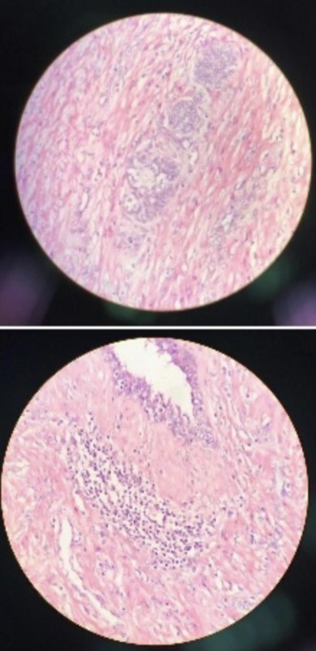

Quiz de Fisiologia
1. O que são adaptações celulares ?
Próxima
2.Diferencie adaptação fisiológica da adaptação patológica.
Próxima
Anterior
3. Hipertrofia diz respeito à: "uma adaptação celular resultante do aumento do tamanho das células, que resulta no aumento do tamanho de determinado órgão". Essa afirmação é verdadeira ou falsa ? Justifique.
Próxima
Anterior
4. Cite um exemplo de hipertrofia fisiológica e um de hipertrofia patológica.
Próxima
Anterior
5. Qual é o conceito de hiperplasia?
Próxima
Anterior
6. A imagem abaixo representa qual tipo de adaptação celular?

Próxima
Anterior
7. O que é metaplasia ? Cite onde ela pode ocorrer.
Próxima
Anterior
8. O que é atrofia?
a) Rompimento da célula
b)Diminuição do tamanho das células por perda substância celular
c)Sinônimo de autofagia
d)Aumento da carga de trabalho da célula
Anterior
Concluir